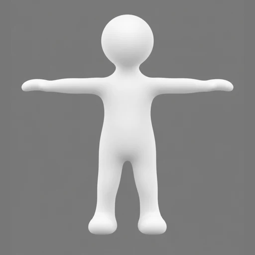
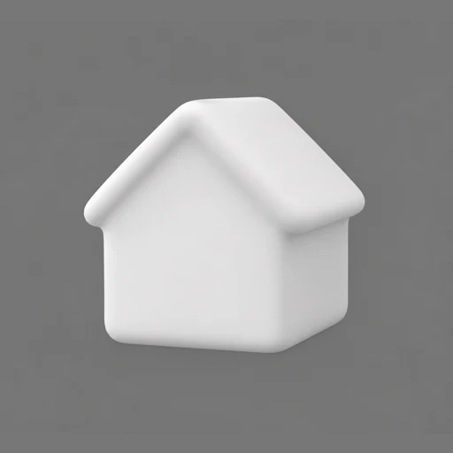

Pointer ready
Draw with a mouse or touch. With camera on, pinch your thumb and index finger to draw.
Use your index fingertip as a pen, then turn your sketch into a 3D model you can rotate and export.
Draw with a mouse or touch. With camera on, pinch your thumb and index finger to draw.
Trace a head, torso, arms and legs. Drag to orbit and scroll or pinch to zoom.

A smooth white figure with a rounded head and blended joints. TripoSR reconstructed this solid mesh from a single front-view image.
This example was generated in advance.

A solid gabled house with rounded edges and a matte-white finish, reconstructed by TripoSR.
This example was generated in advance.
Track fingertip landmarks, smooth the cursor, and store each pinch as a polyline. Convert each stroke to connected cylinders and joints. For houses, fit a gable profile to the sketch and extrude a solid.
In this appMediaPipe Hand LandmarkerRasterize the strokes and classify the sketch if you need automatic routing. Fit a skeleton or a house template to detected corners, endpoints, and intersections. Add depth constraints for consistent, editable geometry.
Quick, Draw! training dataRender the sketch to a clean reference image with an image-to-image model. Segment the subject, then run image-to-3D inference on a GPU server. Expect invented depth and test sparse sketches before committing.
ControlNet Scribble